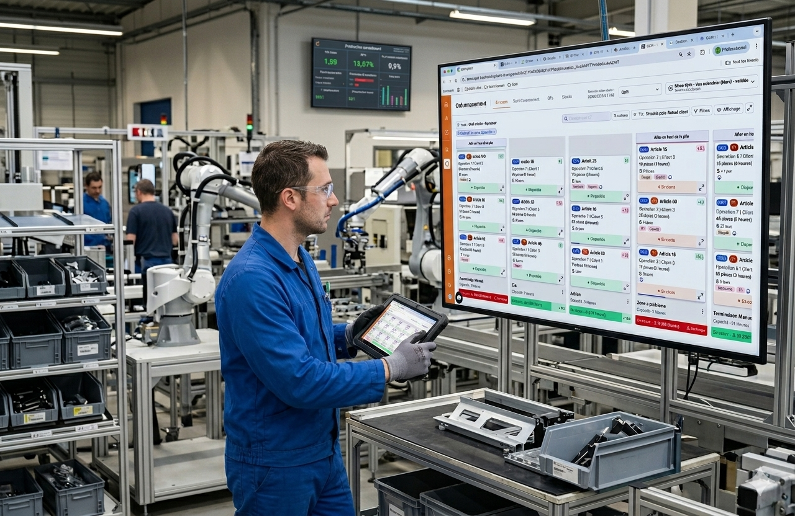
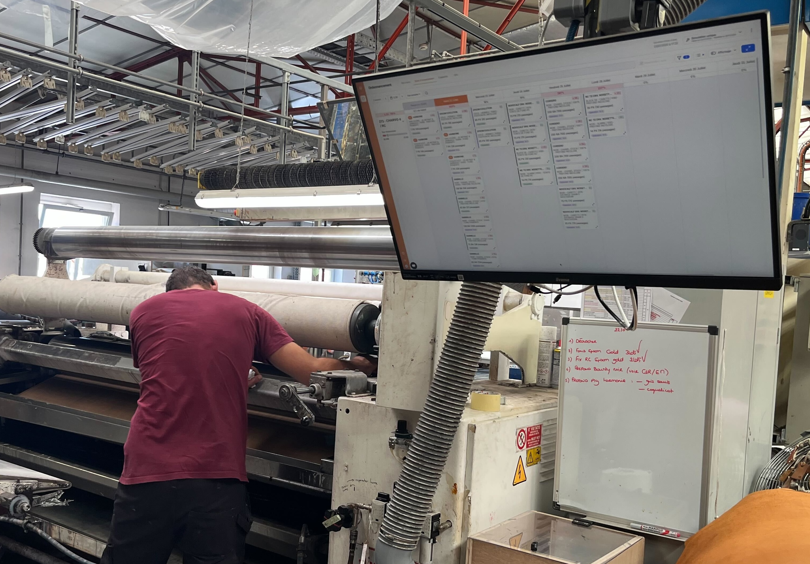
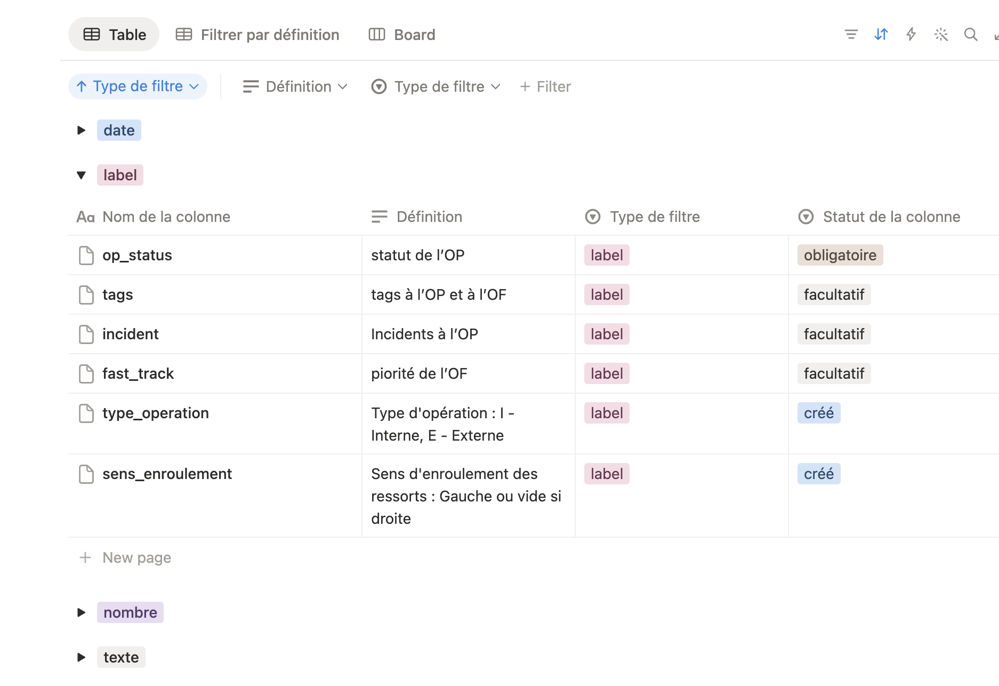
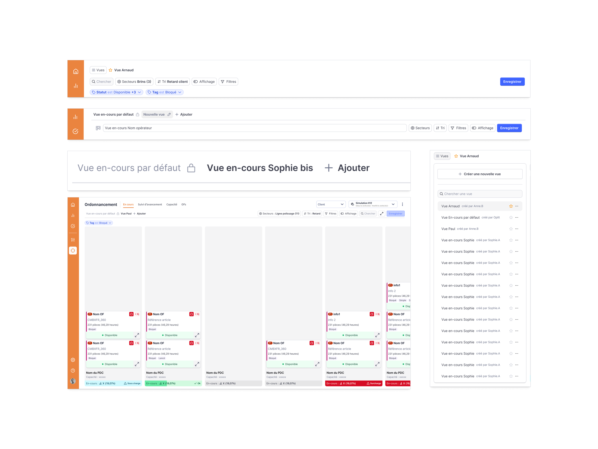
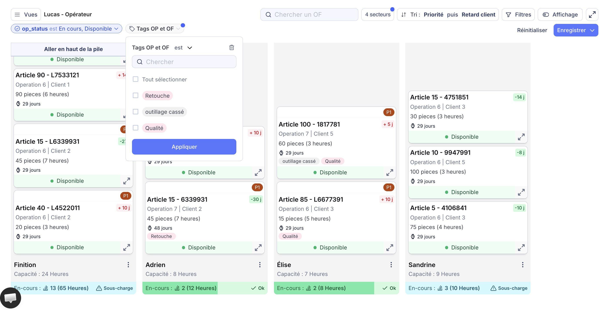

De la refonte des filtres aux vues partagées
Refonte du système de filtres d'Oplit, logiciel B2B de gestion industrielle, et introduction des vues sauvegardées. Derrière un simple besoin de filtrage plus flexible, la recherche a révélé un enjeu plus large : permettre aux utilisateurs de retrouver leur contexte de travail complet en une seule action, pour un résultat de deux fois plus d'utilisation des filtres et un usage adopté par 20 clients.

Un outil métier utilisé au quotidien
Oplit est un logiciel B2B de gestion industrielle. Les ordonnanceurs et responsables de production l'utilisent quotidiennement pour piloter les ordres de fabrication, suivre les retards et analyser la capacité.
Ce projet a été mené dans un cadre professionnel chez Oplit. Conçu de bout en bout, il a été développé puis déployé en production, et utilisé chaque jour par les utilisateurs de l'outil.

Un système de filtrage peu flexible
Les filtres d'Oplit étaient trop rigides : un seul comportement possible et aucune adaptation au type de donnée manipulée. Les utilisateurs étaient bloqués. Quatre besoins sont remontés du terrain.
L'insight qui a tout changé
En creusant le besoin de sauvegarde, on a compris que ce n'était pas juste « mémoriser les filtres ». Cinq clients principaux ont été explorés pour cadrer le besoin et confronter les hypothèses.
Il serait intéressant d'enregistrer une vue pour notre gestionnaire matière non précieuse (Marc), car il ne travaille qu'en regardant les OFs concernés par une demande de matière.
« Nous filtrons aussi les numéros d'OFs pour observer plusieurs OFs en même temps selon une liste. Et pour la gestion de l'or, nous filtrons par nom de client. »
« Je voudrais des filtres spécifiques par secteur : voir le découpage, le tournage… Je veux pouvoir faire des filtres différents sur chaque poste de charge. »
S'inspirer d'autres contextes pour résoudre un problème métier
Trois produits ont nourri la réflexion. Pour chacun, ce qu'on a observé et ce qu'on en a retenu pour Oplit.
Ces principes ont nourri les premières pistes : d'abord modéliser le typage des champs, puis explorer la barre de filtres et le système de vues.


Des filtres sauvegardés dans des vues
Deux chantiers complémentaires : rendre les filtres adaptés et lisibles, puis les capturer dans des vues réutilisables.

- Champs typés : texte, nombre, date, tag, avec composants et opérateurs adaptés.
- Filtres actifs toujours visibles.
- Empty state clair pour distinguer « vide » de « masqué ».
- Créer, nommer et sauvegarder des vues personnalisées capturant l'état complet de l'écran.
- Vue « En-cours » disponible par défaut.
- Système de droits et de permissions pour les admins.